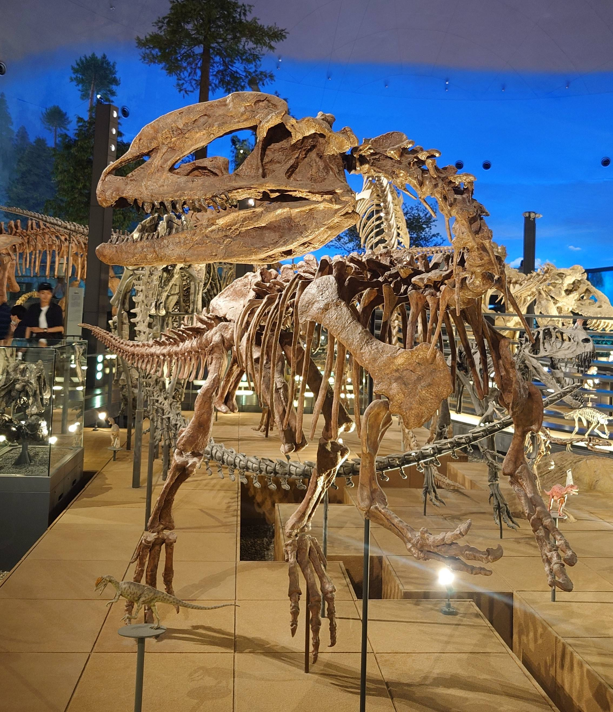
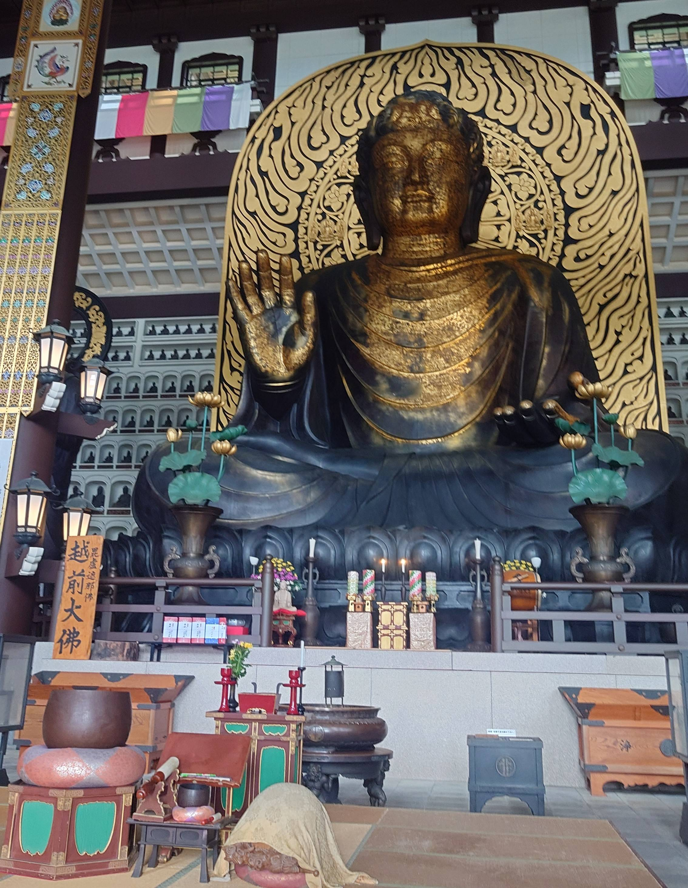
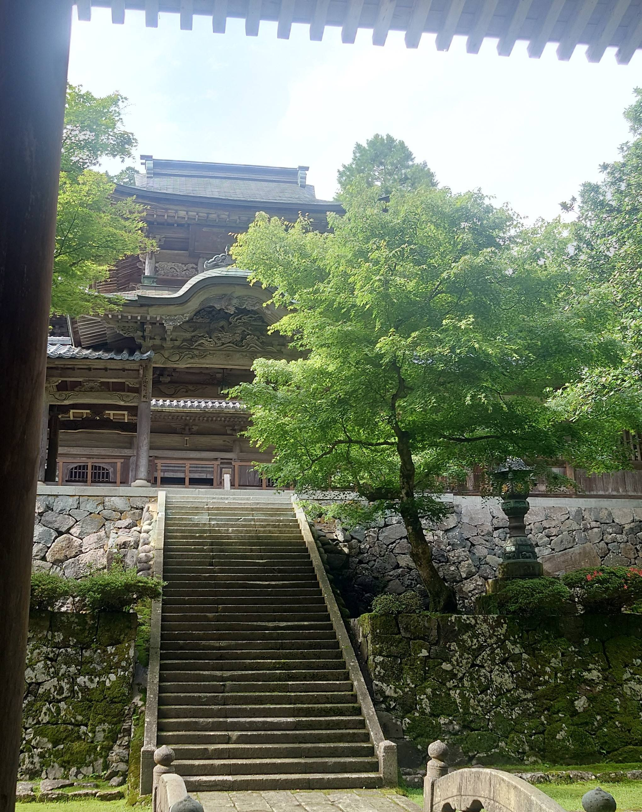

福井
〜恐竜とお寺を巡る旅〜 2025.6
福井までのアクセス（名古屋発）
往路：名古屋 → 米原（東海道本線）→ 敦賀（北陸本線）→ 福井（新幹線 かがやき）
復路：福井 → 敦賀（ハピラインふくい）→ 米原（北陸本線）→ 西岐阜（東海道本線）
恐竜博物館

色々な生物の標本が展示されているだけでなく、映像などで当時の地球の様子が感じられるようになっていてアトラクション感覚で楽しめました。新設された福井大学恐竜学部との協力でさらに研究が進むことが期待できます。
アクセス：福井 → 勝山（えちぜん鉄道）→ 博物館（バス）
大師山清大寺（越前大仏）

高さ１７ｍの大仏を中心として壁一面に仏像があり、圧巻の光景でした。椅子も置いてあるので静かな空間で心を落ち着かせるのにぴったりな場所でした。
アクセス：勝山 → 清大寺（バス＆徒歩）
永平寺

曹洞宗総本山のお寺名だけあって修行僧の様子を実際に見ることができるとても広いお寺でした。ずっと屋根のある所を見学するので雨の日でも行けます。ただ、思っているよりも階段が多いので時間に余裕を持って訪れるのがお勧めです。
アクセス：福井駅 → 永平寺（特急永平寺ライナー）